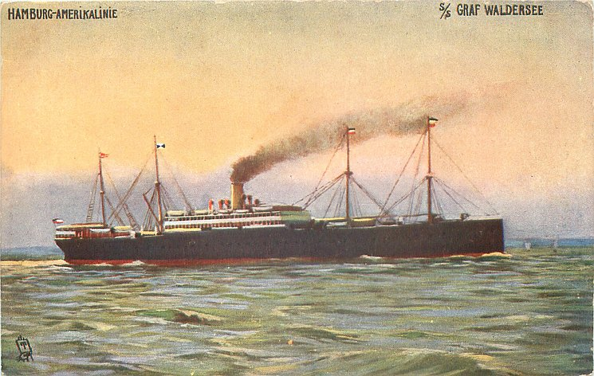

Peter (Petrus) Palmer
20 September 1893 – 14 December 1963
Quick Facts
Immediate Family
Parents
Philippus Palmer (born 1864) DOCUMENTEDBarbara née Wagner (born 1860) DOCUMENTED — from Peter's baptism register entry, Iecea Mică, p. 139, entry 29. Geni shows his father's name in Latin form, "Philippus"
Children
William Peter Palmer (1914–2005) DOCUMENTEDAnna Violet Henderson (Palmer) (1917–1999) SUPPORTED
On Family Tree Sites
Couple Folder
Life Timeline
1893 · age 0
Born and baptized, 20 September, Kisjecsa, Hungary DOCUMENTED
1911 · age 17
Immigrated on the S.S. Graf Waldersee, Hamburg → Philadelphia, joining an address in Cincinnati DOCUMENTED
1913 · age 19
Married Margaret Lorch, 31 May, St. Henry's Catholic Church, Cincinnati DOCUMENTED
1914 · age 20
Son William Peter Palmer born, 1 June, Cincinnati DOCUMENTED
1917 · age 23
Daughter Anna Violet Palmer born, 19 July, Cincinnati; draft-registered, 5 June DOCUMENTED
1921 · age 28
Naturalized, 27 December, Certificate No. 1699589 DOCUMENTED
1963 · age 70
Died, 14 December, at home, 2035 Highland Ave, Cincinnati; funeral at Holy Name Church DOCUMENTED
Life Story
Peter (Petrus) Palmer was born and baptized on 20 September 1893 in Kisjecsa, Hungary — today Iecea Mică, Romania — a Banat German village, the son of Philipp Palmer and Barbara née Wagner. His baptism entry in the Iecea Mică register, page 139, entry 29, names both parents.
At seventeen he left home for America. The S.S. Graf Waldersee carried him from Hamburg on 2 May 1911 to Philadelphia on 15 May 1911; the manifest lists him as a joiner, his nearest relative his mother Barbara Palmer in Kisjecsa, and his destination an address in Cincinnati. He became a cabinet-maker for J. F. Dietz Co. in Cincinnati.
Peter and Margaret Lorch married on 31 May 1913 at St. Henry's Catholic Church in Cincinnati; their Hamilton County marriage banns return survives. Their son William Peter Palmer was born on 1 June 1914 in Cincinnati, and their daughter Anna Violet Palmer on 19 July 1917. Peter registered for the draft on 5 June 1917, giving his address as 2208 Victor Street, his work as a cabinet-maker, and his citizenship papers dated 31 December 1914. No record of actual military service has been found.
His first naturalization petition was denied on 27 June 1921; his second was granted on 27 December 1921, Certificate No. 1699589. The petitions name his wife Margaret and their two children. In 1920 the household at 1051 St. Gregory included Margaret's widowed mother Theresa Lorch. Peter died on 14 December 1963 at home, 2035 Highland Avenue, Cincinnati, and was buried after a funeral at Holy Name Church; his burial place has not been proved.
Photo Gallery

Sources and Evidence
- Baptism register, Iecea Mică (Kleinjetscha), p. 139, entry 29: Peter, son of Philipp Palmer × Barbara Wagner, baptized 20 September 1893 DOCUMENTED
- S.S. Graf Waldersee passenger manifest, Hamburg 2 May 1911 → Philadelphia 15 May 1911, line 26: Peter Palmer, 17, joiner, nearest relative mother Barbara Palmer, Kisjecsa DOCUMENTED
- Hamilton County marriage banns return, Vol. 7, p. 376: Peter Palmer × Margaretha Lorch, 31 May 1913, St. Henry's Church, Cincinnati DOCUMENTED
- WWI draft registration card, Peter Palmer, 5 June 1917, Cincinnati: 2208 Victor St; cabinet-maker, J. F. Dietz Co.; signed Peter Palmer DOCUMENTED
- Naturalization Declaration No. 4579, 31 December 1914, and petition granted 27 December 1921, Certificate No. 1699589 DOCUMENTED
- 1963 obituary and Ohio Death Index, certificate 91455, volume 17504: died 14 December 1963, Cincinnati; funeral Gilligan Funeral Home, Holy Name Church, 16 December DOCUMENTED
Grades: DOCUMENTED an original record says it · SUPPORTED several records point to it · FAMILY ACCOUNT the family's own telling · UNPROVED a lead, not proved.
Research Notes and Open Questions
- Name question: "Peter" dominates every readable record (baptism register: Petrus; passenger lists; censuses; the WWI draft card signed in his own hand; his wife's 1982 obituary reads "the late Peter Palmer"). "William" rests only on the 1963 obituary as cataloged by the Cincinnati library, its given name obscured by a "Page 44" overlay in the scan. No record carries the full name "William Peter Palmer" for him — that name belongs to his son.
- Burial place has not been proved, and no Find a Grave memorial for Peter Palmer (died 1963, Cincinnati) was found.
- Peter's 1963 Ohio death certificate (certificate 91455) has been located in the index but not yet pulled; it would likely settle the legal form of his name and may name a burial place.
- The St. Henry's parish register entry for the 1913 marriage has not been image-read; the register is not on FamilySearch.
- No siblings of Peter are shown on Geni; his father Philippus Palmer's profile lists only Peter as a child.
Profile history: Created 4 November 2026 from the family couple profile and research notes.